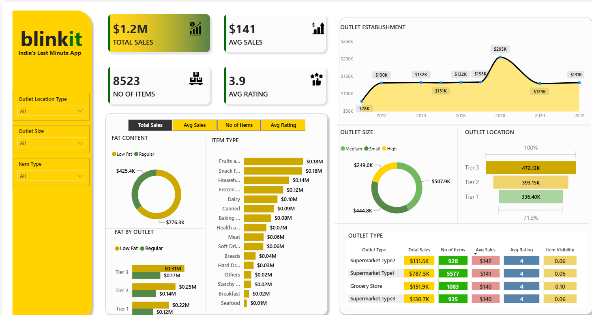

Blinkit Sales Dashboard is an interactive Business Intelligence solution built using Power BI to transform raw retail sales data into meaningful insights. The dashboard enables stakeholders to analyze sales performance, outlet trends, customer preferences, inventory distribution and product performance through dynamic visualizations and KPI-driven reporting.

Retail businesses generate massive volumes of sales and inventory
data every day. However, without effective visualization and
analysis, identifying trends, monitoring performance and making
informed business decisions becomes increasingly difficult.
Blinkit Sales Dashboard was built using
Power BI to convert raw retail data into interactive,
easy-to-understand dashboards. By combining dynamic
visualizations, KPIs, DAX measures and Power Query
transformations, the dashboard enables stakeholders to
monitor sales performance, analyze outlet trends,
understand customer purchasing patterns and make
data-driven business decisions with confidence.
Load raw Blinkit sales and outlet datasets
Clean and prepare datasets using Power Query
Build DAX measures and calculated metrics
Design interactive charts and business dashboards
Identify sales trends and outlet performance
Enable data-driven decisions through actionable insights
The Blinkit Sales Dashboard transforms raw retail data into meaningful business insights through interactive visualizations, dynamic KPIs and advanced analytical reports, enabling smarter business decisions.
Monitor sales performance through dynamic dashboards with real-time filtering and interactive visualizations.
Created custom DAX calculations to generate meaningful business metrics and performance indicators.
Cleaned, transformed and prepared raw retail data to ensure consistent and accurate reporting.
Compare outlet performance across different locations, sizes and establishment years.
Analyze product categories, item types and inventory performance using interactive visual reports.
Enable faster strategic decisions through actionable insights backed by data visualization and analytics.
A walkthrough of the Blinkit Sales Dashboard showcasing interactive business insights, KPI calculations and retail performance analysis through dynamic Power BI visualizations.
The main dashboard provides an executive overview of Blinkit's business performance through dynamic KPIs, sales trends, outlet performance and interactive filters, enabling quick business analysis.
Raw sales data was cleaned, transformed and prepared using Power Query to ensure consistent reporting, accurate analysis and reliable dashboard performance.
Custom DAX measures power key business metrics, allowing stakeholders to analyze revenue, outlet performance and sales trends through interactive visual reports.
Analyze sales performance across different outlet locations to identify high-performing regions, compare revenue distribution and understand geographical business trends through interactive visualizations.
Compare the contribution of small, medium and large outlets to overall sales. Interactive charts reveal how outlet size impacts revenue generation, customer demand and operational performance.
The Blinkit Sales Dashboard follows a modern Business Intelligence workflow where raw retail data is transformed, modeled and visualized using Power BI to generate meaningful business insights for data-driven decision making.
QuickAI was developed using a modern full-stack technology stack, combining React, Node.js, PostgreSQL and AI services to deliver a scalable, secure and responsive productivity platform.
Building an AI-powered productivity platform required solving real-world engineering challenges across AI integration, authentication, image processing and application performance.
Connecting multiple AI-powered tools while providing a consistent and seamless user experience.
Integrated Gemini AI APIs through a unified backend, enabling content generation, image creation and intelligent responses from a single platform.
Managing image generation and processing while maintaining fast response times and high-quality output.
Optimized API requests and asynchronous processing to generate AI images efficiently with smooth user interactions.
Protecting user sessions and restricting access to authenticated users across the application.
Implemented Clerk Authentication with protected routes, secure session handling and user management.
Ensuring smooth navigation and responsive performance while interacting with multiple AI-powered tools.
Built reusable React components, optimized API calls, implemented lazy loading and improved rendering performance throughout the application.
QuickAI was engineered as a modern AI-powered SaaS platform with scalable architecture, secure authentication, reusable components and intelligent AI services to deliver a seamless productivity experience.
Building QuickAI enhanced my understanding of AI-powered SaaS development, scalable frontend architecture and seamless integration of modern AI services into real-world applications.
Learned how to integrate Gemini AI APIs to power multiple intelligent productivity features through a unified backend.
Implemented secure authentication and protected user sessions using Clerk Authentication.
Built reusable React components and structured application flows for better scalability and maintenance.
Worked with Express.js APIs and PostgreSQL to manage application data efficiently and securely.
Explored AI-powered image generation and background removal while optimizing request handling and user experience.
Improved responsiveness through reusable components, optimized API communication and efficient rendering.